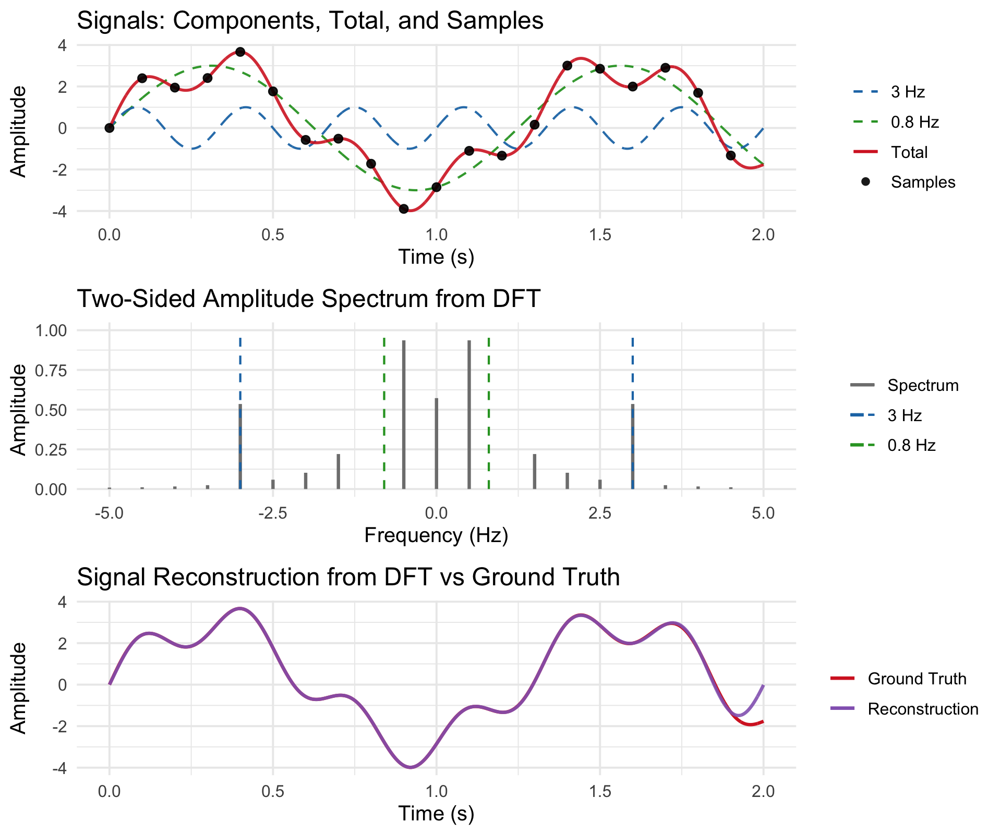

FFT <- function(x) {
N <- length(x)
if (N == 1) return(x)
X_even <- FFT(x[seq(1, N, by = 2)])
X_odd <- FFT(x[seq(2, N, by = 2)])
k <- 0:(N/2 - 1)
twiddle <- exp(-2i * pi * k / N) * X_odd
c(X_even + twiddle, X_even - twiddle)
}The Fourier transform provides a way to represent signals, functions, or processes in terms of their frequency components, revealing the oscillatory structure underlying time-domain phenomena. Formally, the Fourier framework rests on the idea that complex exponentials \(e^{2\pi i f t}\) form an orthogonal basis for many function spaces. By expanding signals in this basis, we can analyse, filter, and reconstruct them in the frequency domain.
Fourier Transform
Continuous-Time Fourier Transform
For a continuous-time signal \(x(t)\), the Fourier Transform (FT) \(X(\omega)\) and its inverse are defined as
\[ X(\omega) = \int_{-\infty}^{\infty} x(t) e^{-2\pi i f t} dt, \qquad x(t) = \int_{-\infty}^{\infty} X(\omega) e^{2\pi i f t} d\omega. \]
The transform exists if one of the following holds:
- \(x(t) \in L^1(\mathbb{R})\): absolutely integrable; \(X(\omega)\) is continuous and bounded.
- \(x(t) \in L^2(\mathbb{R})\): square-integrable; \(X(\omega)\) exists in the mean-square sense, with Parseval’s identity
\[ \int |x(t)|^2 dt = \int |X(\omega)|^2 d\omega. \] - \(x(t)\) is a tempered distribution (e.g. periodic, impulses), defined via generalized functions.
Discrete-Time Fourier Transform
For a discrete-time sequence \(x[n]\), \[ X(\omega) = \sum_{n=-\infty}^{\infty} x[n] e^{-i\omega n}, \qquad \omega \in [-\pi, \pi). \] This transform is periodic in frequency with period \(2\pi\).
Stochastic Processes
If \(X(t)\) (or \(X[n]\)) is a wide-sense stationary (WSS) process, its autocorrelation function
\[ R_X(\tau) = \mathbb{E}[X(t) X(t+\tau)] \]
defines a power spectral density (PSD) via the Wiener–Khinchin theorem:
\[ S_X(f) = \int_{-\infty}^{\infty} R_X(\tau) e^{-2\pi i f \tau} \, d\tau. \]
The PSD gives the expected power per unit frequency.
The Four Scenarios
The Fourier framework applies to deterministic and stochastic, continuous and discrete systems. Below summarises the four canonical cases and their mathematical conditions.
| Domain | Type | Existence Condition | Example |
|---|---|---|---|
| Continuous | Deterministic | \(x(t) \in L^1\) or \(L^2\) | Acoustic pulse, decaying wave |
| Continuous | Stochastic | WSS + \(R_X(\tau) \in L^1\) | Thermal noise, turbulent flow |
| Discrete | Deterministic | \(x[n] \in l^1\) or \(l^2\) | Digital audio signal |
| Discrete | Stochastic | WSS + \(R_X[k] \in l^1\) | Stock returns, discrete-time noise |
Key Properties
Some of the key properties of the Fourier transform are listed below.
| Property | Time Domain | Frequency Domain |
|---|---|---|
| Linearity | \(a x_1 + b x_2\) | \(a X_1 + b X_2\) |
| Time shift | \(x(t-t_0)\) | \(e^{-2\pi i \omega t_0} X(\omega)\) |
| Frequency shift | \(e^{2\pi i \omega_0 t} x(t)\) | \(X(\omega - \omega_0)\) |
| Convolution | \((x*y)(t)\) | \(X(\omega) Y(\omega)\) |
Sampling and Discretization
The Shannon–Nyquist Sampling Theorem
If a continuous-time signal \(x(t)\) is bandlimited to frequencies \(|f| < f_{\max}\), then it can be perfectly reconstructed from samples \(x[n] = x(nT)\) if the sampling frequency satisfies
\[ f_s = \frac{1}{T} > 2 f_{\max}. \]
The reconstruction formula is then
\[ x(t) = \sum_{n=-\infty}^{\infty} x[n] \mathrm{sinc}\left(\frac{t-nT}{T}\right), \quad \text{where } \mathrm{sinc}(x) = \frac{\sin(\pi x)}{\pi x}. \] To interpret the above result, we notice:
- Sampling in time ⇒ periodic replication in frequency.
- If \(f_s > 2 f_{\max}\), the replicas do not overlap and perfect recovery is possible.
- If \(f_s < 2 f_{\max}\), overlap occurs, producing aliasing.
This theorem links continuous and discrete analysis rigorously.
The Fast Fourier Transform
Discrete Fourier Transform
The discrete Fourier transform (DFT) converts a finite-length sequence (as opposed to the infinite-length sequence in the discrete-time Fourier transform above) of \(N\) uniformly sampled data points into \(N\) equally spaced frequency components:
\[ X[k] = \sum_{n=0}^{N-1} x[n] e^{-2\pi i kn/N}, \quad x[n] = \frac{1}{N} \sum_{k=0}^{N-1} X[k] e^{2\pi i kn/N}. \]
DFT is one of the most consequential constructs in all of applied mathematics as it provides the mathematical and computational bridge between continuous Fourier analysis and the discrete, finite data we actually have in the real world. However, the direct application of DFT has \(O(N^2)\) time-complexity as each of the \(N\) transformed terms of \(X\) sums over all \(N\) terms of \(x\).
Cooley-Tukey’s FFT
The fast Fourier transform (FFT), proposed by Cooley and Tukey in their 1965 paper “An algorithm for the machine calculation of complex Fourier series”, is an efficient way of computing the DFT with a complexity of merely \(O(N \log_2 N)\) via recursion.
For simplicity, we assume our sequence length is even, i.e. \(N = 2M\) for some integer \(M\). Splitting the sequence \(x[n]\) into even and odd samples gives \[ x_{\text{even}}[n] = x[2n], \qquad x_{\text{odd}}[n] = x[2n+1]. \]
Then, we notice the discrete Fourier transform \(X[k]\) can be formulated as
\[ X[k] = \sum_{n=0}^{M-1} x[2n] e^{-2\pi i k(2n)/N} + e^{-2\pi i k / N} \sum_{n=0}^{M-1} x[2n+1] e^{-2\pi i k(2n)/N}. \]
We define the two terms
\[ E[k] = \text{DFT of } x_{\text{even}}, \quad O[k] = \text{DFT of } x_{\text{odd}}. \]
So
\[ X[k] = E[k] + e^{-2\pi i k / N} O[k], \qquad X[k+M] = E[k] - e^{-2\pi i k / N} O[k]. \]
This divides each DFT computation of size \(N\) into two DFTs of size \(N/2\) plus \(N\) multiplications. This recursive division has depth \(\log_2 N\), which means the total time complexity of FFT is \(O(N \log N)\). The pseudocode of FFT is presented below.
Practical Considerations and Limitations
- (Uniform Sampling) Required for standard FFT.
- (Periodicity) The DFT assumes the signal repeats every ( N ). Nonperiodic data cause spectral leakage, mitigated by windowing (Hann, Hamming).
- (Nonuniform Sampling) Requires Nonuniform FFT (NUFFT) or interpolation.
- (Non-power-of-two Lengths) Use mixed-radix or Bluestein algorithms.
- (Precision) Finite floating-point accuracy limits numerical dynamic range.
- (Time–frequency Tradeoff) FFT is global; for nonstationary signals use STFT or wavelet transforms.
Example: Signal Sampling and Reconstruction
This experiment demonstrates how a discrete signal can be analysed and perfectly reconstructed using the DFT and its inverse. A simple two-tone waveform is constructed by summing two sinusoids: one at \(f_1=3 \text{Hz}\) and another at \(f_2=0.8 \text{Hz}\) with three times the amplitude, i.e.
\[ x(t) = \sin(2\pi f_1 t) + 3\sin(2\pi f_2 t). \]
The signal is sampled at 10 Hz over a 2-second window, giving 20 discrete samples that represent the time-domain signal. A finely sampled version of the same signal is also generated to serve as a “ground truth” continuous reference.
The first plot shows how the two sinusoidal components combine to form the total signal and how this composite waveform is captured at discrete time points. The discrete samples contain all the information necessary to recover the original continuous-time signal, provided that the sampling frequency is more than twice the highest signal frequency (the Nyquist condition), which is satisfied here since \(f_s = 10 \text{Hz} > 2 × 3 \text{Hz}\).
The second plot displays the two-sided amplitude spectrum obtained from the DFT of the sampled signal (computed using FFT). It reveals distinct peaks at ±3 Hz and ±0.8 Hz, corresponding to the frequencies of the two underlying sinusoids. The symmetric appearance of the spectrum reflects the fact that the original signal is purely real, so its Fourier representation contains conjugate frequency pairs. This plot demonstrates how the DFT decomposes a discrete-time signal into its constituent frequency components.
Finally, the third plot compares the original “ground truth” continuous signal with a reconstructed version obtained by the inverse FFT. The two curves coincide almost perfectly, confirming that the discrete samples fully preserve the information of the band-limited signal. Together, these results illustrate the core principles of Fourier analysis: decomposition of time-domain signals into frequencies and accurate reconstruction under proper sampling.

When we reduce the sampling frequencies below the Nyquist limit, the reconstructed signal starts to deviate from the ground truth as important portions of the spectrum are not captured.
The R code used to generate the above plot can be found here.